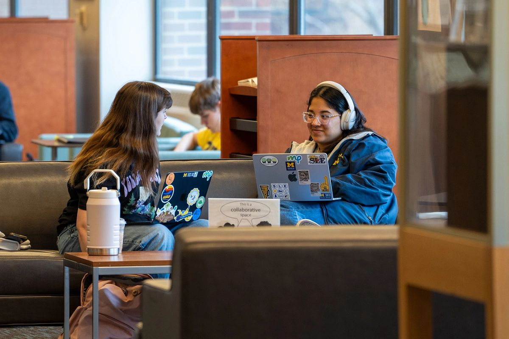

Finding an internship
This page provides resources and guidance to help UMSI students search for internships.Whether you are just starting your search or actively applying, these tools can help you explore opportunities, prepare application materials, and connect with employers.
Do you want to go directly to job and internship listings? If so, visit following:
Identify Your Interests and Goals

Before you get started, reflect on what fields, industries, or roles excite you. Consider both your short-term learning goals and long-term career aspirations.
Following are some questions and step you can think about:
- What motivates you?
- Which fields, industries, or roles excite me the most?
- What companies have internship programs that match my interests?
- Which roles align best with my skills, goals, and other things (location, pay, etc.)?
Prepare Your Application Materials
Before applying for internships, make sure your application materials are ready. Strong resumes, cover letters, and portfolios help employers understand your skills and experience.
Followings are some tips and resournces help you to prepare for your application materials
- Update your resume to highlight relevant coursework and projects
- Write a tailored cover letter for each internship
- Prepare an online portfolio if required
- Proofread all materials before submitting
- How to write a great resume
- How to preapre your portfolio
- How to write a cover letter
Upcoming Career Events
Winter 2026 Career Fair
Winter Job & Internship Fair / In Person / 2 Days
February 3rd and 4th / 12pm - 4pm / Michigan Union
Winter Vitrual Career Fair
Virtual Job & Internship Fair
February 5th / 12pm-3pm / Virtual on Handshake
How Career Fairs Help You Find an Internship
-
Direct Access to Recruiters
Career fairs give you the opportunity to speak face-to-face with recruiters who are actively hiring interns. This allows you to make a personal impression that goes beyond submitting an online application.
-
Practice Professional Communication
Talking with employers helps you practice introducing yourself, explaining your interests, and discussing your skills. This experience builds confidence and prepares you for future interviews.
-
Expand Your Professional Network
Even if a company is not currently hiring, connecting with recruiters can lead to future opportunities. Networking at career fairs can help you build relationships that are valuable throughout your career.
-
Get Career Advice and Feedback
Recruiters can offer insights into what skills are in demand, how to improve your resume, and how to stand out as an applicant in your field.
Career fairs give you the opportunity to speak face-to-face with recruiters who are actively hiring interns. This allows you to make a personal impression that goes beyond submitting an online application.
Talking with employers helps you practice introducing yourself, explaining your interests, and discussing your skills. This experience builds confidence and prepares you for future interviews.
Even if a company is not currently hiring, connecting with recruiters can lead to future opportunities. Networking at career fairs can help you build relationships that are valuable throughout your career.
Recruiters can offer insights into what skills are in demand, how to improve your resume, and how to stand out as an applicant in your field.
Tips for Making the Most of a Career Fair
- Research attending companies in advance
- Prepare a short introduction (elevator pitch)
- Bring copies of your resume
- Dress professionally
- Ask thoughtful questions
- Follow up with recruiters after the event